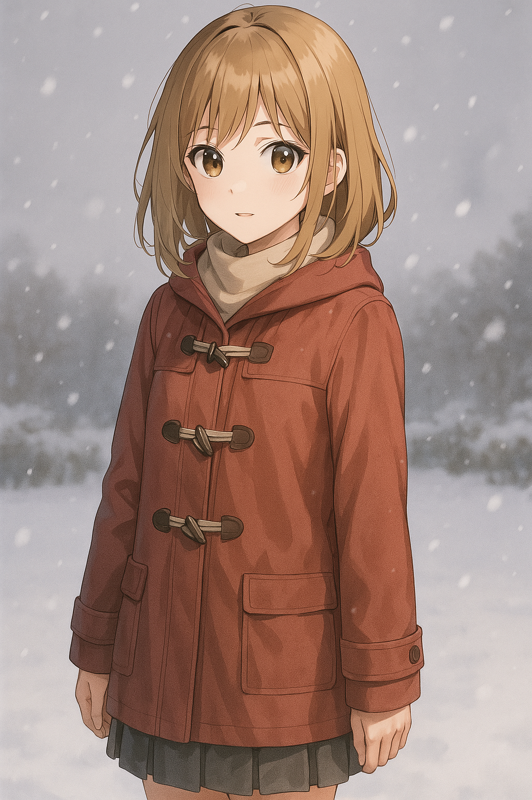

キャラクターの設定メモ
はい、画像からこのキャラクターのプロフィールを考えてみました。 名前: 結城 凛 (ゆうき りん) 年齢: 16歳 性格: 物静かで控えめな性格。 少し内気だが、心優しい。 観察眼が鋭く、周囲の状況をよく把握している。 強い意志と責任感を持っている。 たまにミステリアスな雰囲気を漂わせる。 外見: 肩にかかるくらいの茶色のショートヘア 落ち着いた茶色の瞳 少し色褪せたような肌色 赤いダッフルコートを着用 背景: 雪の降る小さな村に住んでいる。 幼い頃から一人で過ごすことが多く、自然の中で成長した。 村の伝説や歴史に詳しく、古くからの言い伝えを大切にしている。 何か秘密を抱えているような雰囲気がある。 趣味: 雪景色を眺めること 読書（特に歴史書や伝承に関するもの） 写真撮影（自然や風景を撮る） 特技: 鋭い観察眼で物事の本質を見抜くこと 自然と動物と心を通わせること 物語の役割: 主人公の成長を促すヒロイン 物語の鍵を握る謎めいた少女 主人公を導く案内役 その他: 赤いダッフルコートは、亡くなった祖母の形見。 いつも首に小さな銀色のペンダントをつけている。 どうでしょうか？もし設定を変えたい箇所などあれば、お気軽にお申し付けください。